UDN
Search public documentation:
KismetReference
日本語訳
中国翻译
한국어
Interested in the Unreal Engine?
Visit the Unreal Technology site.
Looking for jobs and company info?
Check out the Epic games site.
Questions about support via UDN?
Contact the UDN Staff
中国翻译
한국어
Interested in the Unreal Engine?
Visit the Unreal Technology site.
Looking for jobs and company info?
Check out the Epic games site.
Questions about support via UDN?
Contact the UDN Staff
UE3 Home > Kismet Visual Scripting > Unreal Kismet Reference
UE3 Home > Cinematic Artist > Unreal Kismet Reference
UE3 Home > Cinematic Artist > Unreal Kismet Reference
Unreal Kismet Reference
Overview
Engine Sequence Objects
Actions
Actions are sequence objects that perform a specific action when activated. The activation of these objects is triggered by the output of another action, an event, or a condition being connected to the input of the action. The Sequence Actions available are described below:Actors
Actor Factory
This action is used to create certain assets in the world at the designer's discretion. If you want to spawn a new particle effect, AI bot, etc. in the world during runtime, this is the action to use. This action works by instantiating a particular type of actor factory that is responsible for spawning a certain type of actor. Each actor factory has a set of properties pertaining to that type of actor. These will not be discussed in detail here. If you wish to spawn a type of actor for which no factory exists, a new one would need to be created.- Properties
- Check Spawn Collision - If checked, a collision check is performed between the spawned actor and its surroundings. If the collision check fails, meaning the actor collided with something, the actor is not spawned.
- Enabled - If checked, the action is active and will spawn actors.
- Factory - The actor factory to use for spawning actors from this action.
- Point Selection - Determines how spawn points are chosen from the Spawn Points array.
- PS_Normal - Chooses a new spawn point in numerical order according to the order in which the points were added.
- PS_Random - Chooses a new point from the array at random.
- PS_Reverse - Chooses a new spawn point in reverse numerical order according to the order in which points were added.
- Spawn Count - The total number of actors to spawn. Corresponds to the Spawn Count variable link.
- Spawn Delay - The amount of time to wait between spawning new actors.
- Spawn Locations - An array of locations to spawn actors from if no items are listed in the Spawn Points array. Corresponds to the Spawn Location variable link.
- Spawn Orientations - An array of rotations to use for orienting the spawned actors if no items are listed in the Spawn Points array. Corresponds to the Spawn Direction variable link.
- Spawn Points - An array of actors to use as locations and orientations for spawning new actors. Corresponds to the Spawn Point variable link.
- Input Links
- Spawn Actor - Activating this input causes a one-time spawning of actors. The number of actors spawned is determined by the SpawnCount property.
- Enable - Activating this input enables the action, causing actors to be spawned intermittently depending on the SpawnCount and SpawnDelay properties.
- Disable - Activating this input disables the action, causing actors to cease being spawned.
- Toggle - Activating this input toggles whether the action is enabled or not.
- Output Links
- Finished - Activates when new actors have been successfully spawned.
- Aborted - Activates when spawning new actors fails due to collision checking.
- Variable Links
- Spawn Point - Sets Actors to use as spawn locations and orientations. Corresponds to the Spawn Points property.
- Spawned - Outputs a reference to the spawned actor.
- Spawn Count - Sets the total number of actors to spawn. Corresponds to the Spawn Count property.
- Spawn Location - Sets vector locations to use as spawn locations. Corresponds to the Spawn Locations property.
- Spawn Direction - Sets vector rotations to use as spawn orientations. Corresponds to the Spawn Orientations property.
Actor Factory FX
Similar to Actor Factory, except there is an outbound "Spawned" variable link for each actor instead of only the most recently spawned actor. There is also a “Finished” output link for each spawned actor. See Actor Factory for descriptions of properties and links.Assign Controller
This action allows you to choose a specific class of controller to use to “possess” a given target object. It assumes the target object is of the correct type and is controllable by the chosen controller class. The assignment will fail otherwise. 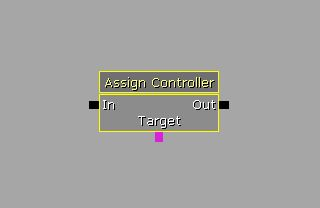- Properties
- Controller Class - The class of controller to use to possess the Target.
- Variable Links
- Target - Sets the object to assign the controller to, or to be possessed by the controller.
Attach To Actor
This action attaches one actor to another, setting the Target as the base of the Attachment. Optionally, a relative offset and rotation can be set for the attachment.- Properties
- Bone Name - A name of a particular bone on the Target actor to attach to.
- Detach - If checked, the Attachment will be detached from the Target, if currently attached.
- Hard Attach - If checked, a hard attachment is performed. The attached actor cannot move relative to the base.
- Relative Offset - An offset to the base actor to attach the attachment at.
- Relative Rotation - A rotational offset from the base's rotation to attach the attachment at.
- Use Relative Offset - If checked, the Relative Offset property is used. Otherwise, the attachment is attached to the pivot of the base or bone.
- Use Relative Rotation - If checked, the Relative Rotation property is used. Otherwise, the attachment is attached with the same orientation as the base.
- Variable Links
- Target - Sets the actor to use as the base.
- Attachment - Sets the actor to attach to the Target.
Change Collision
This action allows you to change collision type of the targeted actors.- Properties
- Collision Type - Specifies the collision type to set the actors to. Replaces old method of setting Block Actors and Collide Actors manually with simple preset enumeration values like normal collision settings in Properties Window for actors.
- Variable Links
- Target - Sets the actor(s) to change collision for.
Destroy
This action destroys the targeted actors. 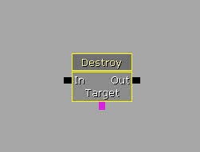- Properties
- Destroy Based Actors - If checked, all actors based on the target actor(s) will also be destroyed.
- Ignored Based Classes - Specifies a list of classes to be ignored when destroying actors based on the target actor(s).
- Variable Links
- Target - Sets the actor(s) to be destroyed.
Get Distance
This action returns the distance in Unreal Units (UU) between two actors.- Variable Links
- A - Sets first actor.
- B - Sets second actor.
- Distance - Outputs the distance between the two actors as a float value.
Get Location and Rotation
This action returns the world-space location and rotation of an actor, or optionally a bone in a skeletal mesh used by the actor.- Properties
- Socket Or Bone Name - If set, the world-space location and rotation of the socket or bone matching this property is returned instead. The code will first attempt to find a socket of matching this name. If it fails to find a socket, it will then attempt to find a bone of matching the name. If both of those checks fail, or the Target is not a pawn with a skeletal mesh, the action will set the location and rotation of the Target itself.
- Variable Links
- Target - Sets the actor to get the location and rotation of.
- Location - Outputs the location of the actor as a vector variable.
- Rotation Vector - Outputs the rotation of the actor as a vector variable.
Get Velocity
This action returns the velocity and speed (velocity magnitude) of an actor. 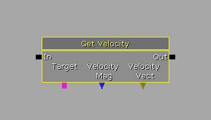- Variable Links
- Target - Sets the actor to get the velocity of.
- Velocity Mag - Outputs the magnitude of the directional velocity vector for the actor, in other words: its speed.
- Velocity Vector - Outputs the directional velocity of the actor as a vector variable.
Modify Health
This action causes damage or healing to be applied to all targeted actors. The damage applied can be radial with a falloff if desired.
- Properties
- Amount - Amount of damage of healing to do. Corresponds to the Amount variable link.
- Damage Type - DamageType class to use when causing damage.
- Falloff - If checked, the amount of damage will fall off with distance. Requires Radial to be checked.
- Heal - If checked, the action performs healing instead of damage.
- Momentum - Amount of momentum to apply with the damage.
- Radial - If checked, the damage applied is a radial damage.
- Radius - Radius to use when doing radial damage.
- Input Links
- In - Activated the damage/healing process.
- Output Links
- Out - Activated when the damage/healing process is completed.
- Variable Links
- Target - Sets the actor(s) to have damage or healing applied to.
- Amount - Sets the amount of damage of healing to do. Corresponds to the Amount property.
- Instigator - The instigator to use for damage.
Set Actor Location
This action sets the world-space location and rotation of an actor.- Properties
- Set Location - If checked, the location of the actor will be set.
- Set Rotation - If checked, the rotation of the actor will be set.
- Variable Links
- Location - Sets the location to set the actor to.
- Rotation - Sets the rotation to set the actor to.
- Target - Sets the actor to set the location and/or rotation for.
Set Damage Instigator
This action sets the Instigator for, or who gets credit for any damage done by, the targeted actor.- Variable Links
- Target - Sets the actor to set the instigator for.
- Damage Instigator - Sets the actor to use as the instigator for the targeted actor
Set Material
This action allows you to change the material assigned to a specified MaterialIndex on the targeted actor(s). The targeted actor must be a dynamic actor; a simple static mesh will not work.- Properties
- Material Index - The index in the materials array to override with the new material.
- New Material - The new material to apply.
- Variable Links
- Target - Sets the actor to set the new material for.
Set Mesh
This action allows you to change the Skeletal Mesh or Static Mesh assigned to the targeted actor(s). This requires the actor be a dynamic actor. 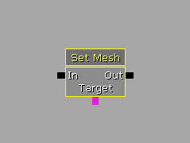- Properties
- Allow Decals To Reattach - If checked, any decals attached to the current mesh will be allowed to attach to the new mesh.
- Is Allows To Move - If checked, the new mesh will be treated as if it can move.
- Mesh Type - Determines whether the new mesh to be applied is a static mesh or skeletal mesh.
- New Skeletal Mesh - New skeletal mesh to apply if Mesh Type is MeshType_SkeletalMesh.
- New Static Mesh - New static mesh to apply if Mesh Type is MeshType_StaticMesh.
- Variable Links
- Target - Sets the actor to apply the new mesh to.
Set SkelControl Target
This action allows you to set the target of a skeletal controller on the targeted actor(s).- Properties
- Skel Control Name - The name of the skeletal controller to set the target of.
- Target Actors - An array of actors to perform the action on. Corresponds to the target Actor variable link.
- Variable Links
- Skel Mesh - Sets the skeletal mesh to set as the target.
- Target Actor - Sets the actor(s) to perform the action on. Corresponds to the TargetActors property.
Set Velocity
This action allows you to set the velocity of the target actor(s).Stream In Textures
Forces textures to fully stream in all mip levels for a certain number of seconds. The affected textures resume their normal streaming behavior after the duration. The textures can be specified in a number of different ways:- By material* - All textures used by materials listed in the "Force Material" property are fully streamed in.
- By actor* - All textures used by actor nodes attached to the "Actor" link are fully streamed in.
- By location* - The locations of actors attached to the "Location" link will be added to the list of current view locations in the streaming system. The streaming system will stream in nearby textures in the same way as if the game camera was there.
- Properties
- Cinematic Texture Groups - Textures that belong to the selected texture groups will stream in their higher-resolution cinematic mip levels for the duration of this action. Other textures will only stream in all their regular mip levels. Note that the texture must be set up with cinematic mip levels in order for these checkboxes to have any effect. (See the "Num Cinematic Mip Levels" texture property.)
- Force Materials - Specifies textures that will be streamed in by material.
- Location Actors - Specifies actors to be used as locations to use as a basis for streaming in nearby textures. Corresponds to the Location variable link.
- Seconds - The duration of the forced streaming. As soon as the action is triggered, the timer starts and all specified textures will start to stream in. All forced textures resume their normal streaming behavior after this duration. We recommended always setting a reasonable duration (even if the action is stopped by another event) to avoid wasting texture memory by mistakenly forgetting to stop this action.
- Input Links
- Start - Causes textures to begin being streamed in.
- Stop - Ends forced texture streaming if activated before the duration of the texture streaming has not been reached.
- Output Links
- Finished - Fires when the duration of the texture streaming has been reached.
- Aborted - Fires if the Stop input link is activated before the duration has been reached.
- Variable Links
- Actor - Sets the actor(s) to stream in all associated textures for.
- Location - Sets the actor(s) to use for location based streaming. Corresponds to the Location Actors property.
Teleport
This action causes the targeted actors to be relocated to the destination actor.- Properties
- Update Rotation - If checked, the rotation of the targeted actor(s) will be set to that of the destination actor upon teleportation.
- Variable Links
- Target - Sets the targeted actor(s) to teleport.
- Destination - Sets the actor to use as a destination to teleport to.
AI
Abort Move
This action causes the targeted actor(s), assuming they are AI entities, to abort any pending move actions.Move To Actor
This action causes the targeted actor(s), assuming they are AI entities, to move toward the destination actor with the option of specifying a look at target.- Properties
- Destination - List of actors to use as possible destinations for the AI entity to move to.
- Interruptable - If checked, this move can be aborted once started.
- Look At - An actor to use as the focus for the AI entity as it performs the move. Corresponds to the Look At variable link.
- Movement Speed Modifier - Sets a factor to multiply by the normal movement speed of the AI entity.
- Pick Closest - If checked, the closest destination actor in the Destination array will be chosen as the new destination. Otherwise, a destination is chosen at random from the Destination array.
- Output Links
- Finished - Fires when the Ai entity reaches the destination.
- Aborted - Fires if the current move in progress is aborted, i.e. by using the Abort Move action.
- Out - Simple pass-through output that is fired when the In input link is activated.
- Variable Links
- Target - Sets the actor(s) to tell to move to the destination, assuming they are AI entities.
- Destination - Sets the actor(s) to use as possible destinations.
- Look At - Sets the actor to use as the focus for the AI entity as it moves. Corresponds to the Look At property.
Camera
Camera Shake
This action creates a configurable animation-driven or oscillating shaking effect on the camera.- Properties
- Do Controller Vibration - If checked, the camera shake will cause the controller to vibrate.
- Orient Toward Radial Epicenter - If checked, the camera shake will be rotated to be relative to the radial epicenter, meaning positive X points toward the epicenter. Requires Radial Shake to be checked.
- Play Space - Sets how the camera shake offsets are oriented.
- CAPS_CameraLocal - Orients offsets to the camera's local space.
- CAPS_World - Orients offsets to the world axes.
- CAPS_UserDefined - Orients offsets to the actor linked to the LocationActor variable link.
- Radial Shake - If checked, cameras of nearby players will shakes as well as the targeted actor(s).
- Radial Shake_Falloff - Sets the falloff between the inner and outer radii for a radial camera shake. Requires Radial Shake to be checked.
- Radial Shake_Inner Radius - Distance at which the shake is at full magnitude for radial shakes. Requires Radial Shake to be checked.
- Radial Shake_Outer Radius - Distance at which the shake reaches 0 magnitude for radial shakes. Requires Radial Shake to be checked.
- Shake - Shake properties
- Anim - CameraAnim to play for the an animation-driven camera shake.
- Anim Blend In Time - Sets how long it takes to blend from no animation to full animation
- Anim Blend Out Time - Sets how long it takes to blend from full animation to no animation.
- Anim Play Rate - Sets how fast the animation is played.
- Anim Scale - Sets how intense the animation is
- FOVOscillation - Sets the oscillation parameters for modifying the field of view (FOV) of the camera.
- Loc Oscillation - Sets the oscillation parameters for the position of the camera.
- Oscillation Blend In Time - Sets how long it takes to go from no oscillation to full oscillation.
- Oscillation Blend Out Time - Sets how long it takes to go from full oscillation to no oscillation.
- Oscillation Duration - Sets how long the oscillation shaking effect will last. A value less than 0 means indefinite. A value of 0 means no oscillation.
- Random Anim Segment - If checked, a random segment of the CameraAnim will be played instead of the whole animation.
- Random Anim Segment Duration - Sets the length of the segment of the CameraAnim that is used when using a random segment. Requires Random Anim Segment to be checked.
- Rot Oscillation - Sets the oscillation parameters for the rotation of the camera.
- Single Instance - If true, only a single instance of this camera shake can be played at any given time. Any subsequent attempts to play the shake will restart the timer.
- Shake Scale - A scaling factor for easy overall scaling without tweaking the individual parameters. For oscillating shakes, this only scales the amplitude.
- Input Links
- Start - Begins playing camera shake.
- Stop - Ends playing camera shake.
- Variable Links
- Target - Sets the actor(s) to play the camera shake for.
- Location - Sets the actor to use as the basis for user-defined playspace camera shakes.
Depth of Field
This action allows you to Enable/Disable/Set DOF properties for the chosen target camera.- Properties
- Blur Kernel Size - Sets the size of the Poisson disc kernel used for blurring.
- Falloff Exponent - Sets the exponent to apply to the blur amount after it is normalized to [0, 1].
- Focus Distance - Sets the distance from the camera to use as the focus point when using FOCUS_Distance Focus Type.
- Focus Inner Radius - Sets the distance from focus plane to keep in full focus.
- Focus Position - Sets the world space position to use as the focus point when using FOCUS_Position Focus Type.
- Interpolate Seconds - Sets the amount of time it takes to blend to and from the DOF effect.
- Max Far Blur Amount - Sets the amount of blur to apply to items beyond the focus plane. Clamped to the range [0, 1].
- Max Near Blur Amount - Sets the amount of blur to apply to items in front of the focus plane. Clamped to the range [0, 1].
- Modulate Blur Color - Sets the color to modulate with items as they are blurred. Usually used for debugging purposes.
- Input Links
- Enable - Causes the camera to blend to the DOF effect.
- Disable - Causes the camera to blend away from the DOF effect.
- Output Links
- Finished - Fires when the interpolation to or away from the DOF effect is complete.
- Aborted - Fires when the interpolation to or away from the DOF effect is interrupted.
- Variable Links
- Target - Sets the camera to apply the DOF effect to.
Fade
This action fades the camera out a chosen color over a specified duration. 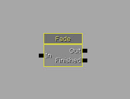- Properties
- Fade Color - Sets the color to fade the camera to.
- Fade Opacity - Sets the opacity to fade to.
- Fade Time - Sets the amount of time for the fade to take.
- Persist Fade - If checked, the fade will persist.
- Output Links
- Out - Simple pass-through output that fires when the In input is activated.
- Finished - Fires when the fade has completed.
Look At
This action makes the target camera look at a specified actor. You can also set the FOV and interpolation speed.- Properties
- Affect Camera - If checked, the camera will be focused on the Focus object.
- Affect Head - If checked, the Target's head will be focused on the Focus object.
- Always Focus - If checked, focus no matter where the Focus object is located. Otherwise, only focus if the Focus object is roughly in view.
- Camera FOV - Sets the FOV to set the camera's FOV to.
- Check Line Of Sight - if checked, the camera must have line of sight to the focus object before any focusing will be performed.
- Disable Input - If checked, input will be disabled for the duration of the focus event.
- Focus Bone Name - Sets the name of a bone on the Focus object to focus on, if desired.
- Ignore Trace - If checked, world tracing will be ignored when attempting to find a good spot for the camera.
- In Focus FOV - Sets how tight the focus should be on the Focus object.
- Interp Speed Range - Sets the speed range of the interpolation to focus the camera.
- Leave Camera Rotation - If checked, the camera will be left focused on the Focus object.
- Rotate Player With Camera - If checked, the camera rotating to focus on the object will affect the player's rotation.
- Text Display - Sets the text to display while the camera is focused on the Focus object, if desired.
- Toggle God mode - If checked, god mode will be enabled while the camera is focused on the Focus object.
- Total Time - Sets the total amount of time for the focus event.
- Turn In Place - If checked, the camera will turn in place. Otherwise, it will move as necessary to focus on the Focus object.
- Output Links
- Out - Simple pass-through output that fires when the In input is activated.
- Finished - Fires when the focus event has completed.
- Succeeded - Fires if the focus event happens successfully.
- Failed - Fires if the focus event fails. For example, if Check Line Of Sight is checked and the trace fails.
- Variable Links
- Target - Sets the targeted player.
- Focus - Sets the object on which to focus.
Motion Blur
This action allows you to adjust the motion blur properties for the chosen target camera.- Properties
- Interpolate Seconds - Sets the amount of time to transition to or from the motion blur effect.
- Motion Blur Amount - Sets the amount of blur to apply.
- Input Links
- Enable - Causes the camera to transition to the new motion blur effect.
- Disable - Causes the camera to transition from the motion blur effect.
- Output Links
- Finished - Fires when the transition to or from the motion blur effect is complete.
- Aborted - Fires when the transition to or from the motion blur effect is interrupted.
- Variable Links
- Target - Sets the targeted camera.
Play CameraAnim
This action animates the player's camera using a Camera Animation asset with options for blending in and out, looping, and play rate.- Properties
- Blend In Time - Sets the amount of time to blend in to the CameraAnim.
- Blend Out Time - Sets the amount of time to blend out of the CameraAnim.
- Camera Anim - Sets the CameraAnim to play.
- Intensity Scale - Sets how much influence the CameraAnim has.
- Loop - If checked, the CameraAnim will loop when it reaches the end.
- Play Space - Sets how the camera animation offsets are oriented.
- CAPS_CameraLocal - Orients offsets to the camera's local space.
- CAPS_World - Orients offsets to the world axes.
- CAPS_UserDefined - Orients offsets to the actor linked to the User Defined Space Actor variable link.
- Random Start Time - If checked, the animation will begin at a random time.
- Rate - Sets the speed at which the CameraAnim plays.
- User Defined Space Actor - Sets the actor to use with a user-defined play space.
- Output Links
- Play - Begins playing the camera animation.
- Stop - Stops the playing camera animation.
- Variable Links
- Target - Sets the targeted camera.
Set Camera Target
This action changes the view target of the targeted actor, useful for non-matinee camera changes.- Properties
- Transition Params
- Blend Exp - Sets the exponent used to control the shape of the animation curve for certain blending functions.
- Blend Function - Sets the blending function to use.
- VTBlend_Cubic - Slight ease in and out, but not configurable.
- VTBlend_EaseIn - Immediate acceleration with smooth deceleration into the target. Blend Exp controls the amount of the ease.
- VTBlend_EaseInOut - Smooth acceleration and deceleration into the target. Blend Exp controls the amount of the ease.
- VTBlend_EaseOut - Smooth acceleration with immediate deceleration. Blend Exp controls the amount of the ease.
- VTBlend_Linear - Simple linear interpolation.
- Blend Time - Sets the duration of the transition.
- Lock Outgoing - If checked, the outgoing camera target is locked to the camera's position on the last frame for the duration of the blend.
- Transition Params
- Variable Links
- Target - Sets the targeted actor, or camera.
- Cam Target - Sets the new camera target.
Cinematic
Control Movie Texture
This action allows you to control the playback of a movie texture.- Properties
- Movie Texture - Sets the movie texture to control.
- Input Links
- Play - Begins playback of the movie texture.
- Stop - Stops playback of the movie texture.
- Pause - Pauses playback of the movie texture.
Cover
Modify Cover
This action allows you to modify cover; enabling/disabling slots, changing cover type, etc.- Properties
- Manual Adjust Players Only - If checked, only manually adjust players.
- Manual Cover Type - Sets the new cover type to set when using manual adjustment.
- Slots - Sets a list of slots to modify.
- Input Links
- Enable Slots - Enables the listed slots.
- Disable Slots - Disables the listed slots.
- Auto Adjust - Performs an auto adjustment.
- Manual Adjust - Performs a manual adjustment using the property values specified.
- Variable Links
- Target - Sets the targeted cover link.
Crowd
Play Agent Animation
This action allows you to specify a list of animation to play on crowd agents while at the targeted node.- Properties
- Animation List - Sets the list of animation to play.
- Blend Between Anims - If checked, the agent will blend between animations in the list. This is especially useful when the animations in the list do not match at the beginning and end.
- Blend In Time - Sets the amount of time to blend into playing the animations.
- Blend Out Time - Sets the amount of time to blend out of playing animations.
- Face Action Target First - If checked, the agent will turn to face the Action Focus actor before playing the animations.
- Loop Index - Sets the index in the list of the animation to loop when Looping is checked.
- Loop Time - Sets the amount of time to loop the animation if Looping is checked. A value of -1.0 means indefinitely.
- Looping - If checked, the specified animation will be looped.
- Use Root Motion - If checked, translation animation on the root bone will be used. Otherwise, only rotation animation is used.
- Input Links
- Play - Begins playing the animations.
- Stop - Stops playing the animations.
- Output Links
- Finished - Fires when the animations have finished playing.
- Stopped - Fires when the Stop input is activated.
- Started - Fires when the Play input is activated.
- Variable Links
- Target - Sets the targeted node.
- Action Focus - Sets the actor to use as an alternate focus.
- Out Agent - Outputs the agent currently playing animations.
Population Crowd Manager
This action allows you to control the population of crowd agents.- Properties
- Cast Shadows - If checked, agents spawned from this action will cast shadows.
- Clear Old Archetypes - If true, the old population manager's archetype list will be cleared and replaced with this action's archetype list rather than adding to the list.
- Crowd Agent List - Sets the list of archetypes to use when spawning agents.
- Enable Crowd Light Environment - If checked, agents spawned from this action will have their light environments enabled.
- Kill Agents Instantly - If checked, all crowd agents will be destroyed immediately when the population manager is disabled. Otherwise, they will be destroyed as they lose relevance.
- Max Agents - Sets the maximum number of agents to allow at any one time.
- Max Simulation Distance - Sets the maximum distance from the camera crowd agents can be to be considered relevant.
- Spawn rate - Sets the number of agents to spawn per second.
- Warmup Pct - Sets the percentage of the maximum population to spawn when the population manager is enabled.
- Input Links
- Start - Begins spawning crowd agents.
- Stop - Stops spawning crowd agents.
UT Crowd Spawner
This action allows you to spawn crowd agents from a group of spawn points with a great deal of control.- Properties
- Agent Lighting Channel - Sets the lighting channels to place the spawned agents in.
- Agent Warmup Time - Sets the amount of time to simulate agents before putting them to sleep if not rendered.
- Cast Shadows - If checked, the agents spawned will cast shadows.
- Crowd Agent List - Sets a list of archetypes to use when spawning agents from this spawner.
- Cycle Spawn Locs - If checked, the crowd spawner will cycle through the spawn points in order instead of choosing one at random.
- Enable Crowd Light Environment - If checked, the agents spawned will have their light environment enabled.
- Force Nav Mesh Pathing - If checked, all agents spawned from this spawner will use navigation mesh pathing.
- Force Obstacle Checking - If checked, all agents spawned from this spawner will do obstacle checking.
- Only Spawn Hidden - If checked, agents will only spawn when the player cannot see the spawn points.
- Respawn Dead Agents - If checked, agents will respawn after being destroyed.
- Spawn Num - Sets the number of agents to spawn per second.
- Spawn Radius - Sets the radius around the spawn point to spawn agents within.
- Split Screen Num Reduction - Sets the amount to reduce the Spawn Num by when playing in splitscreen.
- Warmup Position - If checked, and the spawn point is not in the player's line of sight, and the agent is not part of a group, the agent will attempt to find a location to spawn at a random point between the spawn point and the initial destination of the agent which is also not in the player's line of sight.
- Input Links
- Start - Begins spawning agents.
- Stop - Stops spawning agents.
- Destroy All - Destroys all agents spawned by this spawner.
- Output Links
- Agent Spawned - Fires each time an agent is spawned.
- Variable Links
- Spawn Points - Sets the actors to use as spawn points for this spawner.
- Spawned Agent - Outputs a reference to the agent that was spawned.
Event
Activate Remote Event
This action allows you to "broadcast" a named event that you specify that will trigger any Remote Events set to the same name. Very useful for passing along events across streamed level files.- Properties
- Event name - Sets the name of the of the event to broadcast.
- Instigator - Sets the Instigator to be passed to the associated Remote Event. Corresponds to the instigator variable link.
- Variable Links
- Instigator - Sets the Instigator to be passed to the associated Remote Event. Corresponds to the Instigator property.
Attach To Event
This action allows a Kismet script to listen for an event when it occurs on the attachee. For example, an Attach to Event with the Attachee as an NPC pawn and Event connected to a Death event would occur when this pawn was killed.
- Properties
- Prefer Controller - If checked, the action will attempt to attach the controller of the Attachee if one can be found.
- Variable Links
- Attachee - Sets the actor to be attached.
- Event - Sets the event to attach the actor to.
Level
Change Level Visibility
This action changes the visibility for the specified level.- Properties
- Level - Sets the level streaming object to change the visibility of.
- Level Name - Sets the name of the level to change the visibility of.
- Input Links
- Make Visible - Makes the associated level visible.
- Hide - Hides the associated level.
- Output Links
- Finished - Fires when the level has been made visible or hidden.
Commit Map Change
This action commits an async map change that has been prepared previously.- Input Links
- Commit - Commits the pending map changed.
Prepare Map Change
This action begins preparing an async map change.- Properties
- Initially Loaded Secondary levels - Sets a list of streaming levels to be pre-loaded.
- Is High Priority - If checked, more time will be given to the task of loading the level; useful for loading during movies, etc.
- Main Level Name - Sets the name of the main level to be transitioned to.
- Input Links
- Prepare - begins the process of preparing the map change.
- Output Links
- Finished - Fires when the new level and all secondary levels are fully loaded and ready.
Stream Level
This action allows you to load or unload a specified level.- Properties
- Level Name - Sets the name of the level to load or unload.
- Make Visible After Load - If checked, the level will be made visible after it is loaded.
- Should Block On Load - If checked, a blocking load should be performed.
- Input Links
- Load - Begins loading the level.
- Unload - Begins unloading the level.
- Output Links
- Finished - Fires when the loading or unloading process has completed.
Stream Levels
This action allows you to load or unload a group of levels.- Properties
- Levels - Sets a list of levels to load or unload.
- Make Visible After Load - If checked, the level will be made visible after it is loaded.
- Should Block On Load - If checked, a blocking load should be performed.
- Input Links
- Load - Begins loading the level.
- Unload - Begins unloading the level.
- Output Links
- Finished - Fires when the loading or unloading process has completed.
Wait for Levels to be visible
This action waits for the specified levels to become visible before activating its output.- Properties
- Levels - Sets the list of levels to wait on.
- Should Block On Load - If checked, a blocking load should be performed.
- Input Links
- Wait - Begins waiting on the levels to become visible.
- Output Links
- Finished - Fires when all specified levels have become visible.
Material Instance
Set ScalarParam
This action sets the value of a specified scalar parameter in a Material Instance.- Properties
- Mat Inst - Sets the Material Instance containing the scalar parameter to modify.
- Param Name - Sets the name of the scalar parameter in the material to modify.
- Scalar Value - Sets the value to set the scalar parameter to. Corresponds to the Scalar Value variable link.
- Variable Links
- Scalar Value - Sets the value to set the scalar parameter to. Corresponds to the Scalar Value property.
Math
Add Float
This action adds two float variables together and returns the result.- Properties
- Value A - Sets the first float value to add. Corresponds to the A variable link.
- Value B - Sets the second float value to add. Corresponds to the B variable link.
- Variable Links
- A - Sets the first float value to add. Corresponds to the Value A property.
- B - Sets the second float value to add. Corresponds to the Value B property.
- Float Result - Outputs the result of the addition as a float value.
- Int Result - Outputs the result of the addition cast to an integer value.
Add Int
This action adds two integer variables together and returns the result.- Properties
- Value A - Sets the first integer value to add. Corresponds to the A variable link.
- Value B - Sets the second integer value to add. Corresponds to the B variable link.
- Variable Links
- A - Sets the first integer value to add. Corresponds to the Value A property.
- B - Sets the second integer value to add. Corresponds to the Value B property.
- Int Result - Outputs the result of the addition as an integer value.
- Float Result - Outputs the result of the addition cast to a float value.
Cast To Float
This action casts an integer variable to a float variable.- Variable Links
- Int - Sets the integer value to be cast to a float value.
- Result - Outputs the result of the cast as a float value.
Cast To Int
This action casts a float variable to an integer variable.- Variable Links
- Float - Sets the float value to be cast to an integer value.
- Result - Outputs the result of the cast as an integer value.
Divide Float
This action divides two float variables and returns the result.- Properties
- Value A - Sets the float value of the dividend. Corresponds to the A variable link.
- Value B - Sets the float value of the divisor. Corresponds to the B variable link.
- Variable Links
- A - Sets the float value of the dividend. Corresponds to the Value A property.
- B - Sets the float value of the divisor. Corresponds to the Value B property.
- Float Result - Outputs the result of the division as a float value.
- Int Result - Outputs the result of the division cast to an integer value.
Divide Int
This action divides two integer variables and returns the result.- Properties
- Value A - Sets the integer value of the dividend. Corresponds to the A variable link.
- Value B - Sets the integer value divisor. Corresponds to the B variable link.
- Variable Links
- A - Sets the integer value of the dividend. Corresponds to the Value A property.
- B - Sets the integer value divisor. Corresponds to the Value B property.
- Int Result - Outputs the result of the division as an integer value.
- Float Result - Outputs the result of the division cast to a float value.
Get Vector Components
This action returns the individual X, Y, and Z components of a vector variable as float values.- Variable Links
- Input Vector - Sets the vector value from which to obtain the components.
- X - Outputs the X component of the vector as a float value.
- Y - Outputs the Y component of the vector as a float value.
- Z - Outputs the Z component of the vector as a float value.
Multiply Float
This action multiplies two float values and returns the result.- Properties
- Value A - Sets the first float value to multiply. Corresponds to the A variable link.
- Value B - Sets the second float value to multiply. Corresponds to the B variable link.
- Variable Links
- A - Sets the first float value to multiply. Corresponds to the Value A property.
- B - Sets the second float value to multiply. Corresponds to the Value B property.
- Float Result - Outputs the result of the multiply as a float value.
- Int Result - Outputs the result of the multiply cast to an integer value.
Multiply Int
This action multiplies two integer variables and returns the result.- Properties
- Value A - Sets the first integer value to multiply. Corresponds to the A variable link.
- Value B - Sets the second integer value to multiply. Corresponds to the B variable link.
- Variable Links
- A - Sets the first integer value to multiply. Corresponds to the Value A property.
- B - Sets the second integer value to multiply. Corresponds to the Value B property.
- Int Result - Outputs the result of the multiply as an integer value.
- Float Result - Outputs the result of the multiply cast to a float value.
Set Vector Components
This action sets the value of a vector variable from three float variables, X, Y, and Z.- Variable Links
- Output Vector - Outputs the resulting vector from the combined input components.
- X - Sets the value for the X component of the vector.
- Y - Sets the value for the Y component of the vector.
- Z - Sets the value for the Z component of the vector.
Subtract Float
This action subtracts one float variable from another (A* - B) and returns the result.- Properties
- Value A - Sets the float value of the minuend. Corresponds to the A variable link.
- Value B - Sets the float value of the subtrahend. Corresponds to the B variable link.
- Variable Links
- A - Sets the float value of the minuend. Corresponds to the Value A property.
- B - Sets the float value of the subtrahend. Corresponds to the Value B property.
- Float Result - Outputs the result of the subtraction as a float value.
- Int Result - Outputs the result of the subtraction cast to an integer value.
Subtract Int
This action subtracts one integer variable from another (A* - B) and returns the result.
- Properties
- Value A - Sets the float value of the minuend. Corresponds to the A variable link.
- Value B - Sets the float value of the subtrahend. Corresponds to the B variable link.
- Variable Links
- A - Sets the float value of the minuend. Corresponds to the Value A property.
- B - Sets the float value of the subtrahend. Corresponds to the Value B property.
- Int Result - Outputs the result of the subtraction as an integer value.
- Float Result - Outputs the result of the subtraction cast to a float value.
Misc
AND Gate
This action passes through a signal to the Out link a single time after every link to the input has fired at least once.Console Command
This action allows you to pass a command from Kismet to the console.- Properties
- Commands - Sets a list of commands to be run when the action is activated.
- Variable Links
- Target - Sets the targeted actor used to run the command; usually the player.
Convert To String
This action converts any other variable type to the string representation of its value.- Properties
- Include Var Comment - If checked, the Obj Comment for each input will be included in the resulting string preceding the value of the input and separated by a ‘;'.
- Number Of Inputs - Sets the number of ‘Inputs' variable links visible. Note: Multiple variables can be linked to a single input and will be converted in the order in which they are connected, but visually knowing the order they will be converted is easier using multiple inputs, one for each variable.
- Var Separator - Sets the character used for separating the value and/or comment of one input variable from the next.
- Variable Links
- Inputs - Sets the variables to be converted to string.
- Output - Outputs the string representation of the input variables.
Delay
This action causes a delay in a sequence with a variable duration. Delays can be paused, restarted, and aborted.- Properties
- Duration - Sets how long the action will wait before firing the Finished output link. Corresponds to the Duration variable link.
- Start Will Restart - If checked, activating the Start input link when the timer is already running will reset the timer and being again. Otherwise, the timer will just continue running
- Input Links
- Start - Starts the timer for the delay.
- Stop - Resets the time and aborts the delay.
- Pause - Pauses the timer without aborting the delay.
- Output Links
- Finished - Fires when the timer runs out.
- Aborted - Fires when the delay is aborted.
- Variable Links
- Duration - Sets how long the action will wait before firing the Finished output link. Corresponds to the Duration property.
Draw text
This action displays a piece of text on-screen during gameplay.- Properties
- Display On Object - If checked, the text is displayed relative to the targeted actor(s) instead of in HUD space.
- Display Time Seconds - Sets the amount of time to show the message. If value is less than 0, the message shows until hidden.
- Draw Text Info
- Message Color - Sets the color to use for drawing the text.
- Message Font - Sets the font to use for drawing the text.
- Message Font Scale - Sets the scale to use for drawing the text.
- Message Offset - Sets the offset to use when drawing the text.
- Message Text - Sets the text to display.
- Input Links
- Show - Displays the text message.
- Hide - Stops displaying the text message.
- Variable Links
- Target - Sets the targeted actor(s).
Finish Sequence
This action is used inside sub-sequences to expose named outputs to the parent sequence.- Properties
- Output Label - Sets the display name for the output link displayed on the sequence object in Kismet.
Force Feedback
This action allows you to apply a force feedback waveform to the controller of the targeted player(s).- Properties
- FFWaveform - Sets the force feedback waveform to apply.
- Predefined Wave Form - Selects a predefined waveform to apply.
- Input Links
- Start - Begins force feedback using the selected waveform.
- Stop - Stops force feedback if not using a predefined waveform.
- Variable Links
- Target - Sets the targeted player(s) to apply force feedback to.
Force Garbage Collection
This action forces the garbage collector to run.- Output Links
- Finished - Fires when the garbage collection process has run.
Gate
This action allows you to pass through a signal to the Out link depending on the state of the gate. To change the state of the gate, send a signal to the Toggle input. To open or close the gate, send a signal to the Open or Close input, respectively. The Out tab will be active when there is an 'In' signal AND the gate is opened. This is useful to combine inputs, e.g.: If two conditions must occur for an action to be triggered. This can be achieved by opening the gate when Condition 1 is met and firing 'In' signal when Condition 2 is met.- Properties
- Auto Close Count - Sets the amount of times the gate can be activated before it closes automatically. A value of 0 disables this functionality.
- Open - If checked, the gate will initially be open.
- Input Links
- In - Passes signal through to the Out output link if the gate is currently in the open state.
- Open - Sets the gate to the open state.
- Close - Sets the gate to the closed state.
- Toggle - Toggles the state of the gate.
Log
This action outputs the contents of all attached variables to the log, and optionally to the screen (bOutputToScreen). In order to expose a variable connector, you must right-click on the log action and add the variable connector of your choice. Then connect the variable you want to print to that connector.- Properties
- Include Obj Comment - if checked, the object comment of the linked variable(s) will be included in addition to the value(s).
- Output To Screen - If checked, the action's output will be displayed on the screen in addition to be output to the log file.
- Target Duration - Sets the amount of time to display the output above the targeted actor.
- Target Offset - Sets the offset from the targeted actor's location to display the output.
- Variable Links
- Target - Sets the targeted actor to display the output above.
Timer
This action counts the amount of time that elapses between starting and stopping.- Properties
- Time - The amount of time elapsed. Corresponds to the Time variable link.
- Input Links
- Start - Begins counting the elapsed time.
- Stop - Stops counting the elapsed time.
- Variable Links
- Time - The amount of time elapsed. Corresponds to the Time property.
Trace
This action performs a ray trace from the starting point to the end point, determines if anything was hit along the way, and fires the associated output link. The first hit object is returned as well as the distance to the hit object and the location of the hit.- Properties
- End Offset - Sets the offset from the end point.
- Start Offset - Sets the offset from the starting point.
- Trace Actors - If checked, the trace will include actors.
- Trace Extent - Sets the type of trace to perform, zero extent or non-zero extent.
- Trace World - If checked, the trace will include world geometry.
- Output Links
- Not Obstructed - Fires if the trace hit nothing.
- Obstructed - Fires if the trace hit something.
- Variable Links
- Start - Sets the actor to use as the starting point for the trace.
- End - Sets the actor to use as the end point for the trace.
- Hit Object - Outputs the object hit by the trace, if any.
- Distance - Outputs the distance in Unreal units from the starting point to the Hit Object as a float value.
- Hit Loc - Outputs the world position of the hit Object as a vector value.
ObjectList
Access Objectlist
This action allows more control of Objectlist variables. You can get a random element in the list, or the first or last one, as well as a specific one using the index number. This allows for some fairly powerful concepts in Kismet such as LIFO and FIFO stacks!- Properties
- Object Index - Sets the index of the object in the list to access. Corresponds to the Index variable link.
- Input Links
- Random - Selects an object from the list at random.
- First - Selects the first object in the list.
- Last - Selects the last object in the list.
- At Index - Selects the object at the specified Index.
- Variable Links
- Object List - Sets the Object List to access.
- Index - Sets the index of the object in the list to access. Corresponds to the Object Index property.
- Output Object - Outputs the selected object from the list.
IsIn Objectlist
This action checks to see if the given object(s) are in the specified Objectlist variable.- Properties
- Check For All Objects - If checked, all objects to test must be present in the list. Otherwise, only one match is required for success.
- Input Links
- Test If In list - Checks to see if any or all objects are present in the object list.
- Output Links
- In List - Fires if the test was successful.
- Not In List - Fires if the test failed.
- Variable Links
- Object(s) To Test - Sets the object(s) to test against the object list.
- Object List Var - Sets the object list to test.
Modify Objectlist
This action allows you to add or remove objects from an Objectlist variable. You may also use this to clear the Objectlist.- Input Links
- Add To List - Adds the connected object to the object list.
- Remove From List - Removes the connected object from the object list, if present in the list.
- Empty List - Clears all entries from the object list.
- Variable Links
- Object Ref - Sets the object to add or remove from the object list.
- Object list Var - Sets the object list to modify.
- List Entries Count - Outputs the number of items in the object list after being modified.
Object Property
Get Property
This action returns the value of a given object, int, float, string, or bool from the specified object. The output of a Get Property can in turn be fed into another Get Property if desired. This can be used to ascertain, for example, what StaticMesh is used for a given KActor (by first querying StaticMeshComponent, then StaticMesh).- Properties
- Property Name - Sets the name of the property to get the value of.
- Variable Links
- Target - Sets the object to get the property value for.
- Object - Outputs the property value if it is an object reference.
- Int - Outputs the property value if it is an integer value.
- Float - Outputs the property value if it is a float value.
- String - Outputs the property value if it is a string value.
- Bool - Outputs the property value if it is a Boolean value.
Modify Property
This action sets the specified property values for the targeted actor(s).- Properties
- Properties* - Sets a list of property names and new values to set those properties to.
- Variable Links
- Target - Sets the targeted object to modify the properties for.
Particles
Particle Event Generator
This action generates an event that can be used by a particle system of the targeted actor(s).- Properties
- Enabled - If checked, the event generator action is enabled.
- Use Emitter Location - If checked, the targeted emitter's position will be used as the location of the event.
- Input Links
- Trigger Event - Generates the given events if the event generator is enabled.
- Enable - Enables the event generator.
- Disable - Disables the event generator.
- Toggle - Toggles the state of the event generator.
- Variable Links
- Target - Sets the targeted emitter.
- Event Names - Sets the list of names of events to generate.
- Event Time - Sets the time the event occurred.
- Location - Sets the location of the event, unless Use Emitter Location Is checked.
- Direction - Sets the direction of the event.
- Velocity - Sets the veloctiy of the event.
- Normal - Sets the hit normal of the event.
Set Particle Param
This action sets the value of instance parameters inside a particle system of the targeted actor(s).- Properties
- Instance Parameters - Sets the list of instance parameters to set the values of.
- Override Scalar - If checked, any scalar parameters in the Instance Parameters list will have their values overridden with the value of the Scalar Value property/variable link.
- Scalar Value - Sets the value to use when overriding scalar parameter values. Corresponds to the Scalar Value variable link.
- Variable Links
- Target - Sets the targeted actor(s).
- Scalar Value - Sets the value to use when overriding scalar parameter values. Corresponds to the Scalar Value property.
Pawn
Give Inventory
This action gives a customizable inventory list to the targeted actors.- Properties
- Clear Existing - If checked, the inventory of the targeted actor(s) will be emptied before giving the specified inventory items.
- Force Replace - Not implemented?
- Inventory List - Sets a list of inventory items to give to the targeted actor(s).
- Variable Links
- Target - Sets the targeted actor(s) to give inventory items to.
Possesses Pawn
This action allows you to assign a controller from one pawn to another.- Properties
- Kill Old Pawn - if checked, any Pawn currently possessed by the targeted controller will be killed.
- Try To Leave Vehicle - If checked, the targeted controller will attempt to leave any vehicle it is currently manning.
- Variable Links
- Target - Sets the targeted controller.
- Pawn Target - Sets the new Pawn to possess.
Physics
Set BlockRigidBody
This action allows you set the bBlockRigidBody property on the targeted actor(s).- Input Links
- Turn On - Sets bBlockRigidBody to true.
- Turn Off - Sets bBlockRigidBody to false.
- Variable Links
- Target - Sets the targeted actor(s).
Set Physics
This action allows you set the physics type on the targeted actor(s).- Properties
- New Physics - Sets the new physics mode to switch to.
- Variable Links
- Target - Sets the targeted actor(s) to set the physics for.
Set RigidBodyIgnoreVehicles
This action allows you set the bRigidBodyIgnoreVehicles property on the targeted actor(s). 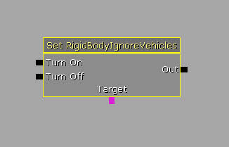- Input Links
- Turn On - Sets bRigidBodyIgnoreVehicles to true.
- Turn Off - Sets bRigidBodyIgnoreVehicles to false.
- Variable Links
- Target - Sets the targeted actor(s) to set the bRigidBodyIgnoreVehicles property for.
Toggle Constraint Drive
This action allows you to enable or disable the angular or linear position or velocity drives of a constraint.- Properties
- Enable Angular Position Drive - If checked, the angular position drive of the targeted constraint will be affected.
- Enable Angular Velocity Drive - If checked, the angular velocity drive of the targeted constraint will be affected.
- Enable Linear Position Drive - If checked, the linear position drive of the targeted constraint will be affected.
- Enable Linear velocity Drive - If checked, the linear velocity drive of the targeted constraint will be affected.
- Input Links
- Enable Drive - Enables the drives set to be affected by the action.
- Disable Drive - Disables the drives set to be affected by the action.
- Variable Links
- Target - Sets the targeted constraint(s).
Set Variable
Set Bool
This action sets the value of a bool variable using the value of another bool variable.- Properties
- Default Value - Sets the default value to use if no variable is linked to the Value variable link.
- Variable Links
- Value - Sets the value to set the targeted variable to.
- Target - Sets the targeted variable to set the value of.
Set Float
This action sets the value of a float variable using the value of another float variable.- Properties
- Value - Sets a list of values, the sum of which is used to set the value of the targeted variable. Corresponds to the Value variable link.
- Variable Links
- Value - Sets a list of values, the sum of which is used to set the value of the targeted variable. Corresponds to the Value property.
- Target - Sets the targeted variable to set the value of.
Set Int
This action sets the value of an integer variable using the value of another integer variable.- Properties
- Value - Sets a list of values, the sum of which is used to set the value of the targeted variable. Corresponds to the Value variable link.
- Variable Links
- Value - Sets a list of values, the sum of which is used to set the value of the targeted variable. Corresponds to the Value property.
- Target - Sets the targeted variable to set the value of.
Set Object
This action sets the value of an object variable using the value of another object variable.- Properties
- Default Value - Sets the default value to use if no variable is linked to the Value variable link.
- Variable Links
- Value - Sets the value to set the targeted variable to.
- Target - Sets the targeted variable to set the value of.
Set String
This action sets the value of a string variable using the value of another string variable.- Properties
- Value - Sets the value which is used to set the value of the targeted variable. Corresponds to the Value variable link.
- Variable Links
- Value - Sets value which is used to set the value of the targeted variable. Corresponds to the Value property.
- Target - Sets the targeted variable to set the value of.
Set Vector
This action sets the value of a vector variable using the value of another vector variable.- Properties
- Default Value - Sets the default value to use if no variable is linked to the Value variable link.
- Variable Links
- Value - Sets the value to set the targeted variable to.
- Target - Sets the targeted variable to set the value of.
Sound
Apply Sound Node
This action attaches an audio component to the targeted actors, allowing a bit more control over the sound as it plays. Not recommended for heavy use (see PlaySound and AmbientSound for simple cases) since it's cumbersome to setup, but it can be handy for special cases where you need to tweak a specific property that wouldn't otherwise be exposed to Kismet.- Properties
- Apply Node - Sets the SoundNode to apply and allows you to set its properties.
- Play Sound - Sets the sound wave to play.
- Variable Links
- Target - Sets the targeted actor(s) to attach the audio component to.
Play FaceFx Anim
This action plays a specified FaceFX animation and SoundCue on the targeted actor(s).- Properties
- FaceFX Anim Name - Sets the name of the FaceFX animation within the specified group to play.
- FaceFX AnimSet Ref - Sets the FaceFX AnimSet containing the animation to play.
- FaceFX Group Name - Sets the group within the FaceFXAsset to find the animation in.
- Sound Cue To Play - Sets the SoundCue to play with this animation.
- Variable Links
- Target - Sets the targeted actor(s) to play the animation on.
Play Music track
This action plays a background music track with the ability to fade in and out as well as be persistent across level changes.- Properties
- Music track
- Auto Play - If checked, the track will play when attached to the scene.
- Fade In Time - Sets the amount of time it takes to fade in when activated.
- Fade In Volume Level - Sets the volume the sound should fade in to.
- Fade Out Time - Sets the amount of time it takes to fade out when the track is stopped.
- Fade Out Volume Level - Sets the volume the sound should fade out to.
- Persistent Across Levels - If checked, the track will continue playing on map changes.
- The Sound Cue - Sets the SoundCue to play.
- Music track
Play Sound
This action plays a specified SoundCue. Targeting to an object variable will spatialize to that object.- Properties
- Extra Delay - Sets the amount of extra dead space to append to the sound's duration.
- Fade In Time - Sets the amount of time it takes to fade in when activated.
- Fade Out Time - Sets the amount of time it takes to fade out when stopped.
- Pitch Multiplier - Sets a multiplier for the pitch of the sound.
- Play Sound - Sets the SoundCue to play.
- Volume Multiplier - Sets a multipler for the volume of the sound.
- Input Links
- Play - Plays the specified sound.
- Stop - Stops the playing sound.
- Output Links
- Out - Fires any time one of the input links is activated.
- Finished - Fires when the playing sound finishes.
- Stopped - Fires when the playing sound is stopped manually.
- Variable Links
- Target - Sets the targeted actor(s) to spatialize the sound to.
Set Sound mode
This action allows you to set the sound mode being used.- Properties
- Sound mode - Sets the SoundMode to use.
- Top Priority - If checked, this sound mode is the highest priority, game specific, and ignored by PlayerController.
- Input Links
- Start - Begins using the new SoundMode.
- Stop - Stops using the new SoundMode.
Switch
Random
This action has a definable number of outputs, and randomly chooses one of its output links to activate each time the input link is activated. Change the LinkCount property to create/remove output links.- Properties
- Auto Disable Links - If checked, each output link will be disabled once it has been fired.
- Increment Amount - Sets the amount to increment the attached variables upon activation. Used on Random Switch?
- Indices - Holds the currently active link index.
- Link Count - Sets the number of output links that should be exposed.
- Looping - If checked, the switch will loop back to the first output once all outputs have fired. Used on Random Switch?
- Input Links
- In - Causes one of the enabled output links to be fired at random.
- Reset - Enables all links.
- Variable Links
- Active Link - Outputs the index of the currently active output link.
Switch
This action has a definable number of outputs, and will increment to the next one every time it is fired. Change the LinkCount property to create/remove output links, and then when the switch is activated it looks at the Index variable (or Indices property) to determine which outputs should be activated.- Properties
- Auto Disable Links - If checked, each output link will be disabled once it has been fired.
- Increment Amount - Sets the amount to increment the attached variables upon activation.
- Indices - Holds the currently active link index.
- Link Count - Sets the number of output links that should be exposed.
- Looping - If checked, the switch will loop back to the first output once all outputs have fired.
- Input Links
- In - Causes the next enabled output link to be fired.
- Variable Links
- Index - Sets or outputs the index of the currently active output link.
Toggle
Toggle
Used to toggle certain actors, boolean values, or enable/disable events. Some actors that support the generic toggle action include: Emitter, KActor, KAsset, Light, NavigationPoint, PlayerStart, RB_XXXImpulseActor, SkeletalMeshActor, Volume.- Input Links
- Turn On - Enables, or sets to true, the associated actors , variables, or events.
- Turn Off - Disables, or sets to false, the associated actors , variables, or events.
- Toggle - Toggles the associated actors , variables, or events.
- Variable Links
- Target - Sets the targeted actor(s) to toggle.
- Bool - Sets the bool variable(s) to toggle.
- Event - Sets the event(s) to toggle.
Toggle AffectedByHitEffects
This action enables, disables, or toggles whether the targeted actor is affected by hit effects.
- Input Links
- Enable - Sets the targeted actor(s) to be affected by hit effects.
- Disable - Sets the targeted actor(s) to be not affected by hit effects.
- Toggle - Toggles whether the targeted actor(s) are affected by hit effects.
- Variable Links
- Target - Sets the targeted actor(s).
Toggle Cinematic Mode
This action can enable, disable, or toggle several aspects of the game for the targeted actor. Some of these aspects include input, turning, movement, the HUD, and the player's mesh.- Properties
- Dead Bodies - If checked, dead bodies will be toggled by this action.
- Disable Input - If checked, player input will be toggled by this action.
- Disable Movement - If checked, player movement will be toggled by this action.
- Disable Turning - If checked, player turning will be toggled by this action.
- Dropped Pickups - If checked, dropped pickups will be toggled by this action.
- Hide HUD - If checked, the HUD's visibility will be toggled by this action.
- Hide Player - If checked, the player's mesh visibility will be toggled by this action.
- Input Links
- Enable - Enables the affected aspects of the game.
- Disable - Disables the affected aspects of the game.
- Toggle - Toggles the affected aspects of the game.
- Variable Links
- Target - Sets the targeted actor(s) to set the cinematic mode for.
Toggle God Mode
This action enables, disables, or toggles the invulnerability of the given target(s).
- Input Links
- Enable - Enables god mode for the targeted actor(s).
- Disable - Disables god mode for the targeted actor(s).
- Toggle - Toggles god mode for the targeted actor(s).
- Variable Links
- Target - Sets the targeted actor(s).
Toggle Hidden
This action toggles bHidden on the target actor(s).- Input Links
- Hide - Sets the targeted actor(s) to be hidden.
- UnHide - Sets the targeted actor(s) to be visible.
- Toggle - Toggles whether the targeted actor(s) are visible.
- Variable Links
- Target - Sets the targeted actor(s).
Toggle HUD
This action toggles the game's HUD interface.- Input Links
- Show - Enables the HUD for the targeted actor(s).
- Hide - Disables the HUD for the targeted actor(s).
- Toggle - Toggles the HUD for the targeted actor(s).
- Variable Links
- Target - Sets the targeted actor(s).
Toggle Input
This action allows movement and turning input to be enabled, disabled, or toggled on the targeted players.- Properties
- Toggle Movement - If checked, player movement will be toggled by this action.
- Toggle Turning - If checked, player turning will be toggled by this action.
- Input Links
- Turn On - Enables the affected aspects of player input.
- Turn Off - Disables the affected aspects of player input.
- Toggle - Toggles the affected aspects of player input.
- Variable Links
- Target - Sets the targeted actor(s) to set toggle input for.
Matinee
This creates a new Matinee sequence. Double-click on the Matinee sequence object in Kismet to access the Matinee editor window. For more information, see the Matinee User Guide- Properties
- Client Side Only - This property tells the engine that the sequence does not affect any part of gameplay, and therefore does not need to be replicated, or performed on networked machines.
- Force Start Pos - If checked, tells the sequence to always start playback from the time* - or timeline position* - indicated by the ForceStartPosition property.
- Force Start Position - Sets a designated position along the timeline from which to start the animation when the Play input is activated. Requires Force Start Pos to be checked.
- Interp For Path Building - If checked, tells the sequence to jump to the time indicated in the Path-Building Position in the timeline when paths are being built.
- Is Skippable - If checked, allows the CANCELMATINEE console command to be used to skip the sequence.
- Looping - If checked, causes the sequence to loop back to the beginning when the end is reached.
- No Reset On Rewind - If checked, causes any actors who are affected by Movement tracks that are using RelativeToInitial interpolation to use the initial position set at the current location when the sequence is rewound. This means that an actor will begin the next loop of the animation from the same location as where the animation ended
- Play Rate - Sets a multiplier for the final speed at which the animation plays back. A value of 1 is equal to normal real-time speed.
- Rewind If Already Playing - This property will cause the animation to automatically rewind back to the beginning if a user activates the Play input again during playback.
- Rewind On Play - This property will cause the animation to always start from the beginning when the Play input is activated, even if the animation was paused.
- Input Links
- Play - Causes the Matinee sequence to begin playback of your animation in a forward direction.
- Reverse - Causes the Matinee sequence to playback in the reverse direction.
- Stop - Stops the Matinee sequence during playback.
- Pause - Pauses the Matinee sequence during playback. Triggering this input twice will effectively un-pause.
- Change Dir - Toggles the current direction that the Matinee sequence is playing.
- Output Links
- Completed - Fired if the Matinee sequence reaches the end of the animation while playing forward.
- Aborted - Fired if the Matinee sequence is playing in reverse and reaches the beginning. Its name can be a bit of a misnomer; it has nothing to do with playback being stopped or paused.
- Event Track Outputs - These outputs do not initially exist. You can create an Event Track in your Matinee sequence object, and these tracks can contain named outputs that are fired off at indicated intervals.
- Variable Links
- Data - Sets the Matinee Data object for this Matinee.
- Group Variable Inputs - These variable inputs, much like the Event Track outputs, do not initially exist. They are created through the generation of Groups within the Matinee sequence object. When a new group is created, a new Group Variable input link will appear along the bottom of the sequence object. The currently selected actor will automatically be placed within an object variable and attached to this new input.
Conditions
Comparison
Compare Bool
This condition fires the appropriate output link depending on the comparison of the attached bool variables.- Output Links
- True - Fires if the value of the linked bool variable is true.
- False - Fires if the value of the linked bool variable is false.
- Variable Links
- Bool - Sets the bool variable to check the value of.
Compare Int
This condition fires the appropriate output link depending on the comparison of the attached integer variables.- Properties
- Value A - Sets the value to be compared. Corresponds to the A variable link.
- Value B - Sets the value to compare to. Corresponds to the B variable link.
- Output Links
- A <= B - Fires if the first value is less than or equal to the second value.
- A > B - Fires if the first value is greater than the second value.
- A == B - Fires if the first value is equal to the second value.
- A < B - Fires if the first value is less than the second value.
- A >= B - Fires if the first value is greater than or equal to the second value.
- Variable Links
- A - Sets the value to be compared. Corresponds to the Value A property.
- B - Sets the value to compare to. Corresponds to the Value B property.
Compare Float
This condition fires the appropriate output link depending on the comparison of the attached float variables.- Properties
- Value A - Sets the value to be compared. Corresponds to the A variable link.
- Value B - Sets the value to compare to. Corresponds to the B variable link.
- Output Links
- A <= B - Fires if the first value is less than or equal to the second value.
- A > B - Fires if the first value is greater than the second value.
- A == B - Fires if the first value is equal to the second value.
- A < B - Fires if the first value is less than the second value.
- A >= B - Fires if the first value is greater than or equal to the second value.
- Variable Links
- A - Sets the value to be compared. Corresponds to the Value A property.
- B - Sets the value to compare to. Corresponds to the Value B property.
Compare Objects
This condition fires the appropriate output link depending on the comparison of the attached object variables.- Output Links
- A == B - Fires if the first value is equal to the second value.
- A = B - Fires if the first value is not equal to the second value.
- Variable Links
- A - Sets the value to be compared. Corresponds to the Value A property.
- B - Sets the value to compare to. Corresponds to the Value B property.
Counter
Float Counter
This condition increments the first attached float variable and then performs a comparison with the second attached float variable and fires the appropriate output link based on that comparison.- Properties
- Increment Amount - Sets the amount to add to the first value each time.
- Value A - Sets the value to be incremented and compared. Corresponds to the A variable link.
- Value B - Sets the value to compare to. Corresponds to the B variable link.
- Output Links
- A <= B - Fires if the first value is less than or equal to the second value.
- A > B - Fires if the first value is greater than the second value.
- A == B - Fires if the first value is equal to the second value.
- A < B - Fires if the first value is less than the second value.
- A >= B - Fires if the first value is greater than or equal to the second value.
- Variable Links
- A - Sets the value to be incremented and compared. Corresponds to the Value A property.
- B - Sets the value to compare to. Corresponds to the Value B property.
Int Counter
This condition increments the first attached integer variable and then performs a comparison with the second attached integer variable and fires the appropriate output link based on that comparison.- Properties
- Increment Amount - Sets the amount to add to the first value each time.
- Value A - Sets the value to be incremented and compared. Corresponds to the A variable link.
- Value B - Sets the value to compare to. Corresponds to the B variable link.
- Output Links
- A <= B - Fires if the first value is less than or equal to the second value.
- A > B - Fires if the first value is greater than the second value.
- A == B - Fires if the first value is equal to the second value.
- A < B - Fires if the first value is less than the second value.
- A >= B - Fires if the first value is greater than or equal to the second value.
- Variable Links
- A - Sets the value to be incremented and compared. Corresponds to the Value A property.
- B - Sets the value to compare to. Corresponds to the Value B property.
In Combat
This condition fires the appropriate output link depending on whether the targeted actor is currently in combat. 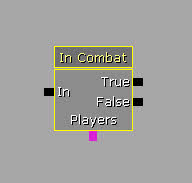- Output Links
- True - Fires if the targeted players are currently in combat.
- False - Fires if the targeted players are not in combat.
- Variable Links
- Players - Sets the targeted players.
Is Alive
This condition fires the appropriate output based on whether the targeted players are currently alive.
- Output Links
- True - Fires if the targeted players are currently alive.
- False - Fires if the targeted players are not alive.
- Variable Links
- Players - Sets the targeted players.
Is Console
This condition fires the appropriate output based on whether the game is being run on a console or not.- Output Links
- True - Fires if the game is being run on a console.
- False - Fires if the game is not being run on a console.
Is Logged In
This condition fires the appropriate output based on whether the specified number of players have logged in.- Properties
- Num Needed Logged in - Sets the number of players that need to be logged in for the condition to be true. Corresponds to the Needed Logged In variable link.
- Output Links
- True - Fires if the specified number of players have logged in.
- False - Fires if less than the specified number of players have logged in.
- Variable Links
- Needed Logged In - Sets the number of players that need to be logged in for the condition to be true. Corresponds to the Num Needed Logged In property.
Same Team
This condition compares if the selected players are on the same team or not.- Output Links
- True - Fires if the targeted players are on the same team.
- False - Fires if the targeted players are not on the same team.
- Variable Links
- Players - Sets the targeted players.
Server Type
This condition fires the appropriate output link based on the type of server running (Standalone, Dedicated Server, Listen Server) or if it is a client.- Output Links
- Standalone - Fires if the game is a standalone server.
- Dedicated Server - Fires if the game is a dedicated server.
- Listen Server - Fires if the game is a listen server.
- Client - Fires if the game is a client.
Switch
Switch Class
This condition compares the given object with a list of classes specified in ClassArray and fires the corresponding output if a match is found. It is useful for determining if an unknown object is of a particular class. The Default output is always present and occurs if the object does not match any members in Class Array.- Properties
- Class Array - Sets a list of classes to check against.
- Variable Links
- Object - Sets the targeted object to compare.
Switch Object
This condition compares the given object with a list of object values to determine if they match and fires the corresponding output if a match is found or the Default output if no match is found.- Properties
- Meta Class - Sets a base class that the object must be a subclass of.
- Supported Classes - Sets a list of object values to compare against.
- Variable Links
- Object - Sets the targeted object to compare.
Switch Platform
This condition fires the appropriate output based on what platform the game is being run on. 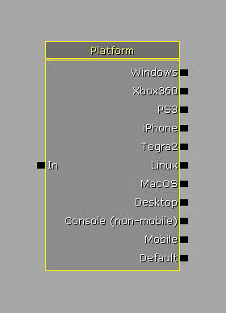- Output Links
- Windows - Fires if the game is running on Windows.
- Xbox360 - Fires if the game is running on Xbox 360.
- PS3 - Fires if the game is running on Playstation 3.
- iPhone - Fires if the game is running on the iPhone OS.
- Tegra2 - Fires if the phone is running on a Tegra 2 system.
- Linux - Fires if the game is running on a Linux OS.
- MacOS - Fires if the game is running on Mac OS.
- Desktop - Fires if the game is running on any desktop OS.
- Console (non-mobile) - Fires if the game is running on a console other than a mobile platform.
- Mobile - Fires if the game is running on a mobile platform.
- Default - Fires if the game is running on any platform not matching any of the other options.
Variables
Bool
This variable holds a boolean value; valid values are True (1) and False (0).External Variable
In sub-sequences, an external variable is a variable that can be passed into the sub-sequence from an outside source (i.e. the source that calls the sub-sequence). They inherit their type from what they are connected to in the sub-sequence. The VariableLabel is the name of the external variable as it appears in the sub-sequence box.Float
Float
This variable holds a floating point value.Random Float
This variable holds a randomly chosen Float value between the specified Min and Max values.Int
Int
This variable holds an integer variable.Random Int
This variable holds a randomly chosen Int value between the specified Min and Max values.Matinee Data
This variable is a special variable type designed to hold Matinee data, such as keyframes, tracks, etc. This enables different Matinee sequences to share the same data.Named Variable
This variable allows you to pass the value of another variable into this variable based on matching the FindVarName with the VarName value assigned in the original variable. It essentially points to another variable.Object
Object
This variable holds a reference to any object in the world, including ones created inside Kismet.Object List
This variable can hold a list of object references making it easier to represent groups of multiple objects in Kismet. 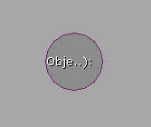Object Volume
This variable holds references to all objects contained within the volume assigned to the variable making it easy to reference large groups of objects in a specific area. Objects of specific classes can be excluded.Player
This variable holds a reference to the player(s) in the game, should only be used as input as anything that attempts to change the value will be ignored.String
This variable holds a string value containing any combination of alphanumeric characters.Vector
This variable holds a vector value (X, Y, Z).Events
Actor
Anim Notify
This event is fired when an animation notification matching the Notify Name is triggered.- Properties
- Notify name - Sets the name of the animation notification to listen for.
Destroyed
This event is fired if the associated object is destroyed.Take Damage
This event is fired when the target actor(s) take damage greater than the specified Min Damage Amount.- Properties
- Damage Threshold - Sets the amount of damage that must be done before the event will fire.
- Damage Types - Sets a list of damage types that are counted.
- Ignore Damage Types - Sets a list of damage types that are ignored.
- Min Damage Amount - Sets the minimum amount of damage that must be done to register.
- Reset Damage On Toggle - If checked, the cumulative damage count will be reset if the event is toggled.
- Variable Links
- Damage Taken - Outputs the amount of damage taken.
AI
Reached Route Actor
This event is fired when the associated AI entity reaches an actor along its route.See Enemy
This event is fired when the associated AI entity sees an enemy pawn. The enemy pawn can be referenced by the Instigator variable link.
- Properties
- Max Sight Distance - Sets the maximum distance an enemy can be to trigger this event.
Crowd
Agent Reached
This event is fired when the associated crowd agent reaches its destination.- Output Links
- Agent Reached Destination - Fires when an agent reaches its destination.
- Variable Links
- Agent - Outputs the agent that reached the destination.
Input
Key/Button Pressed
This will fire when any keyboard key or mouse/controller button is pressed/held/released. You must specify the name (or names) of the key/button or binding that the event responds to. Here are some of the valid entries you could use in the Input Names array:- SpaceBar - this would fire when the SpaceBar is used
- Use - this would fire whenever the key assigned to the Use command (via .ini file) is used
- XboxTypeS_A - this would fire whenever the A button on a controller is pressed (this would map the X button on a PS3 controller)
- LeftMouseButton
Analog Input
This will fire whenever an analog input is used. Examples of this are MouseX/Y, analog sticks on controllers, and tilt/motion from handheld devices. Here are some valid entries you could use in the Input Names array:- MouseX
- XboxTypeS_LeftX
- Tilt
- RotationRate
- Acceleration
- Gravity
Touch Input
This will fire whenever a touchpad event occurs. Currently, the mouse button will not trigger this event, unless you run the game with -simmobile (or -es2). This may change in the future. There are output variables for the touch location (in screen coordinates), and which touch index it is (0-5 for an iOS device, etc). The touchpad index is used for devices like the PS Vita that has 2 touchpads.Level Loaded
This will fire the associated output link when the current level Loaded and Visible, Beginning, or Reset.- Output Links
- Loaded and Visible - Fires when the level is loaded and visible.
- Beginning of Level - Fires when the level begins.
- Level Reset - Fires when the level is reset.
Level Startup
This event is fired once a game is started, NOT when the level is first loaded/game run. Use Sequence Activated if you need to start Kismet as soon as you run the game/load the level.Misc
Console Event
This event is fired if the user uses the command `causeevent X' with X being the string defined in the properties for the event.- Event Desc - Sets the name of the event to listen for.
Particles
Particle Event
This event fires when a particle event is generated by the associated particle system.- Properties
- Use Reflected Impact Vector - If checked, the impact direction reflected about the hit normal will be used as the normal.
- Variable Links
- Type - Outputs the type of event.
- Pos - Outputs the particle position of the event.
- ETime - Outputs the emitter time of the event.
- Vel - Outputs the particle velocity of the event.
- PTime - Outputs the particle time of the event.
- Normal - Outputs the collision normal of the event.
Pawn
Death
This event is fired off if the associated object's death occurs.Get Inventory
This event is fired when the associated pawn acquires a new inventory item.- Variable Links
- Inventory - Outputs the inventory item acquired by the associated pawn.
Line of Sight
This event is fired when any pawn has a line of sight to the associated Line of Sight Trigger.- Properties
- Check For Obstructions - If checked, a clear line of sight to the trigger is required.
- Screen Center Distance - Sets the maximum distance from the screen center allowed to trigger this event.
- Trigger Distance - Sets the maximum distance from the trigger allowed to trigger this event.
- Output Links
- Look - Fires when the pawn acquires line of sight to the trigger.
- Stop Look - Fires when the pawn loses line of sight to the trigger.
See Death
This event fires in the event of a death. Returns the victim, the killer, and any witnesses who saw the death occur.- Variable Links
- Victim - Outputs the player who died.
- Killer - Outputs the player who made the kill.
- Witness - Outputs any nearby players.
Physics
Constraint Broken
This event fires when the associated constraint is broken.
Hit Wall
This event is fired when the associated actor hits a wall.Mover
This event forms the basis for a simple lift-style mover. It fires its various output links depending on interaction between the associate InterpActor and the players in the game.- Properties
- Stay Open Time - Sets the amount of time for the move to stay at the open position.
- Output Links
- Pawn Attached - Fires when a Pawn becomes based on the associated InterpActor.
- Pawn Detached - Fires when a based Pawn detaches from the associated InterpActor.
- Open Finished - Fires when the mover has been in the open position for the duration of the Stay Open Time.
- Hit Actor - Fires when the mover encroaches another actor during movement.
- Variable Links
- Actor Hit - Outputs the actor encroached upon during movement.
Projectile Landed
This event is fired when a projectile lands providing references to the Shooter, the Projectile, and any Witnesses. 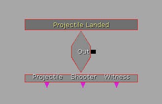- Properties
- Max Distance - Sets the maximum distance the landed projectile can be from the pawn owning the event to trigger this event.
- Variable Links
- Projectile - Outputs a reference to the projectile that landed.
- Shooter - Outputs a reference to the player that shot the projectile.
- Witness - Outputs any nearby players.
Rigid Body Collision
This event is fired when the associated rigid body collides with another actor or geometry in the world.- Properties
- Min Collision Velocity - Sets the minimum velocity the rigid body must collide with to trigger this event.
- Variable Links
- Impact Velocity - Outputs the velocity of the rigid body.
- Impact Location - Outputs the location of the collision.
Touch
This event is fired if the player moves into the collision of the associated object. UnTouched occurs when the player leaves this collision.
- Properties
- Allow Dead Pawns - If checked, all pawns, even those that are dead, can trigger this event.
- Force Overlapping - If checked, the player's origin must be within the collision bounds of the associated object. Otherwise, any collision between the player and the associated object will suffice.
- Use Instigator - If checked, the instigator of the touching actor will be used instead of the actor itself.
- Output Links
- Touched - Fires when a touch occurs.
- UnTouched - Fires when a previously touching actor is no longer touching.
- Empty - Fires when the last touching actor is no longer touching.
Pickup Status Changed
This event is fired when the associated pickup factory's status changes. For example, if the pickup is acquired by a player or is respawned after being picked up.- Output Links
- Available - Fires when the pickup becomes available.
- Taken - Fires when the pickup is taken.
Player
Player Spawned
This event is fired whenever a player is spawned into the world. It will return the player spawned as well as the spawn point. 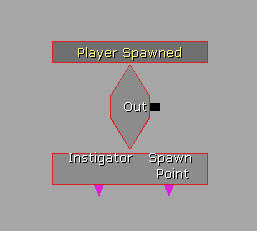- Variable Links
- Spawn Point - Outputs the PlayerStart where the player was spawned.
Remote Event
This event listens for the specified EventName to be called out from an Activate Remote Event action. Used mostly for passing along kismet signals and objects across level files when using level streaming. 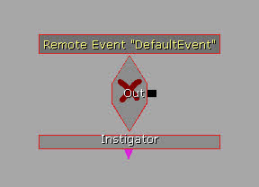- Properties
- Event Name - Sets the name of the event to listen for.
Sequence Activated
This event is used in subsequences to expose new inputs that can be used for more complex scripting. Add one to a subsequence, set the link name, and then use the new input link on the subsequence to feed in activation.- Properties
- Input Label - Sets the name to display for the input link on the sequence object in Kismet.
Used
This event is fired if player performs the `USE' function on the associated actor.
- Properties
- Aim To Interact - If checked, the player must be looking at the object to use it.
- Class Proximity Types - Sets a list of classes that are valid for the event.
- Ignored Class Proximity Types - Sets a list of classes that are not valid for the event.
- Interact Distance - Sets the maximum distance the player can be from the object in order to use it.
- Output Links
- Used - Fires when the object is used.
- Unused - Fires when the object is not being used anymore.
- Variable Links
- Distance - Outputs the distance from the player to the used object.
Comment
Allows you to create a Comment box that you can use to border Kismet boxes and provide a description that stays visible when zooming out in the Kismet editor.- Properties
- Border Color - Sets the color to use for drawing the border.
- Border Width - Sets the width of the border.
- Draw Box - If checked, a box will be drawn for the comment. Otherwise, it is just text.
- Fill Color - Sets the color to use when filling the box.
- Fill Material - Sets a material to use to fill the box if desired.
- Fill texture - Sets a texture to use to fill the box if desired.
- Filled - If checked, the box will be filled. Otherwise, it will just be an outline.
- Size X - Sets the width of the comment box.
- Size Y - Sets the height of the comment box.
- Tile Fill - If checked and a texture or material is being used to fill the box, it will be tiled across the box. Otherwise, it will be stretched to fit the box.
Comment (Wrap)
This allows you to create a comment box to provide a description in Kismet similar to the standard Comment only the text in this type of comment box wraps to obey the bounds of the box. See Comment for property descriptions.UTGame Sequence Objects
UTGame Actions
AI
Add Named Bot
This action allows you to spawn an AI controlled bot with a specified name.- Properties
- Bot Name - Sets the name to give the bot.
- Force Team - If checked, the bot will be forced to be on the specified team.
- Start Spot - Sets the InteractTextto spawn the bot at. Corresponds to the Spawn Point variable link.
- Team Index - Sets the team to force the bot to.
- Variable Links
- Bot - Outputs a reference to the spawned bot.
- Spawn Point - Sets the NavigationPoint to spawn the bot at. Corresponds to the Start Spot property.
Freeze
This action activates or deactivates all automatic behavior and responses on the targeted AI entity.- Properties
- Allow Weapon Firing - If checked, the AI entity will still be allowed to fire its weapon while frozen.
- Input Links
- Freeze - Places the AI entity into the frozen state.
- Unfreeze - Releases the AI entity from the frozen state.
- Variable Links
- Target - Sets the targeted AI entity.
Set Visibility Modifier
This action allows you to set the visibility modifier for the current level.- Properties
- New Visibility Modifier - Sets the new visibility modifier value.
Start Firing At
This action causes the targeted AI entity to begin firing at a specified actor.- Properties
- Forced Fire mode - Sets the fire mode to use when firing.
- Variable Links
- Target - Sets the targeted AI entity.
- Fire At - Sets the actor to fire at.
Stop Firing
This action causes the targeted AI entity to cease firing.- Variable Links
- Target - Sets the targeted AI entity.
Camera
Play Camera Animation
This action animates the player's camera using a Camera Animation asset with options for blending in and out, looping, and play rate.- Properties
- Anim To Play - Sets the CameraAnim to play.
- Blend In Time - Sets the amount of time to blend in to the CameraAnim.
- Blend Out Time - Sets the amount of time to blend out of the CameraAnim.
- Intensity Scale - Sets how much influence the CameraAnim has.
- Rate - Sets the speed at which the CameraAnim plays.
- Variable Links
- Target - Sets the targeted camera.
Stop Camera Animation
This action stops any camera animation currently playing on the targeted camera.- Properties
- Stop Immediately - If checked, the animation will stop immediately when the action is activated. Otherwise, the animation will blend out using the Blend Out Time specified on the Play Camera Animation action that began the animation.
- Variable Links
- Target - Sets the targeted camera.
Cinematic
Dummy Weapon Fire
This action produces dummy weapon fire originating from a given Origin and aimed at a given Target. The type of weapon and the fire mode used are configurable.- Properties
- Fire Mode - Sets the fire mode to use.
- Max Spread - Sets the maximum distance to use for aim error.
- Origin - Sets the location for the firing to originate from. Corresponds to the Origin variable link.
- Shots To Fire - Sets the number of shots to fire. A value of 0 or below will result in continuous fire forever.
- Suppress Sounds - If checked, the weapon sounds will not be played.
- Target - Sets the actor to fire at. Corresponds to the Target variable link.
- Weapon Class - Sets the type of weapon to use.
- Input Links
- Start Firing - Begins the dummy fire.
- Stop Firing - Ends the dummy fire.
- Output Links
- Out - Fires any time one of the input links is activated.
- Finished - Fires when the specified number of shots have been fired.
- Stopped - Fires when the Stop Firing input link is activated.
- Variable Links
- Origin - Sets the location for the firing to originate from. Corresponds to the Origin property.
- Target - Sets the actor to fire at. Corresponds to the Target property.
DemoGame
Set PhysAnimTestActor State
This action allows you to set the state of the targeted PhysAnimTestActor.- Properties
- New State - Sets the new state to place the PhysAnimTestActor to.
- Variable Links
- Target - Sets the targeted PhysAnimTestActor.
Set Wheel Particles
This action changes the particle system used for wheel dust effects on the targeted vehicle.- Properties
- New Particle System - Sets the new particle system to use.
- Variable Links
- Target - Sets the targeted vehicle.
Objective
Return CTF Flag
This action returns the specified team's flag to its base.- Properties
- Team Index - Sets the index of the team to return the flag for.
Set Bots Must Complete
This action sets a flag that tells bots whether they must complete the targeted objective to proceed.- Input Links
- Turn On - Sets the objective as required.
- Turn Off - Sets the objective as not required.
- Variable Links
- Target - Sets the targeted objective.
Pawn
Enter Vehicle
This action causes the targeted actor to enter the specified vehicle. The seat index can be specified to make the actor a driver or passenger.- Properties
- Seat Index - Sets the index of the seat to place the player in. A value of 0 or below will cause the player to be placed as the driver.
- Variable Links
- Target - Sets the targeted pawn.
- Vehicle/Vehicle Factory - Sets the vehicle to place the player into.
Exit vehicle
This action causes the targeted actor to exit the vehicle they are currently in.- Variable Links
- Target - Sets the targeted pawn.
Infinite Ammo
This action gives the targeted actor infinite ammunition.- Properties
- Infinite Ammo - If checked, the pawn is given infinite ammo. Otherwise, infinite ammo is removed from the pawn.
- Variable Links
- Target - Sets the targeted pawn.
Pawn Anim
This action plays the specified animation on the targeted Pawn.- Properties
- Anim Name - Sets the name of the animation to play.
- Looping - If checked, the animation will loop.
- Variable Links
- Target - Sets the targeted pawn to play the animation on.
Use Hoverboard
This action causes the targeted player to begin using their hoverboard.- Variable Links
- Target - Sets the targeted pawn.
- Hoverboard - Outputs a reference to the player's hoverboard.
Story
Adjust Persistent Key
This action allows you to adjust persistent keys in story mode.- Properties
- Remove Key - If checked, the specified key will be removed.
- Target Key - Sets the key to be adjusted.
- Variable Links
- Target - Sets the targeted player.
Team
Change Team
This action places the targeted player on the given team. 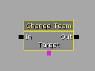- Properties
- New Team Num - Sets the team to place the player on.
- Variable Links
- Target - Sets the targeted player.
Get Team Number
This action returns the team number of the targeted player.
- Variable Links
- Target - Sets the targeted player.
- Team Number - Outputs the team the targeted player is on.
UI Scenes
Close Scene
This action closes the targeted UIScene.
- Properties
- Scene - Sets the scene to close. Corresponds to the Scene variable link.
- Output Links
- Success - Fires if the scene is successfully closed.
- Failed - Fires if the scene fails to close. For instance, if it is not currently open.
- Variable Links
- Scene - Sets the scene to close. Corresponds to the Scene property.
Open Scene
This action opens a new UIScene of the specified type.- Properties
- Desired Player Index - Sets the index of the player that should own the scene. A value of -1 uses the player index of the sequence op that activated this action.
- Scene - Sets the scene to open. Corresponds to the Scene variable link.
- Output Links
- Success - Fires if the scene is successfully opened.
- Failed - Fires if the scene fails to open.
- Variable Links
- Scene - Sets the scene to open. Corresponds to the Scene property.
- Opened Scene - Outputs a reference to the opened UIScene.
Vehicle
Activate Rocket Boosters
This action activates boosters on the targeted vehicle.- Variable Links
- Target - Sets the targeted vehicle to activate boosters on.
Hoverboard Spin Jump
This action causes the targeted hoverboard to perform a spin jump.- Properties
- Warmup Time - Sets the amount of time to wait before performing the spin jump.
- Variable Links
- Target - Sets the targeted hoverboard.
Self Destruct
This action causes the targeted vehicle to self destruct.
- Variable Links
- Target - Sets the targeted vehicle.
Voice Announcements
Play Announcement
This action plays an announcement sounds and displays announcement text on the screen.- Properties
- Announcement
- Announcement Sound - Sets the sound wave to play.
- Announcement Text - Sets the text to display on screen.
- Announcement
Play Voice Message
This action plays a voice message sound.- Properties
- Speaking Character Name - Sets the name of the speaking character.
- Voice To Play - Sets the sound wave to play.
Toggle Announcements
This action enables or disables announcements.- Input Links
- Enable - Enables announcements.
- Disable - Disables announcements.
UTGame Conditions
Do Tutorial
This condition checks whether the tutorial should be played.- Output Links
- Play Tutorial - Fires if the tutorial should be played.
- Abort Tutorial - Fires if the tutorial should not be played.
Has Inventory
This condition checks whether the targeted actor has the specified inventory item and fires the associated output link.- Properties
- Allow Subclass - If checked, the condition checks for any subclass of the specified inventory type. Otherwise, an exact match is required.
- Check Vehicle Driver - If checked and the target is a vehicle, the driver of the vehicle will be checked for the inventory item.
- Required Inventory - Sets the inventory class to check for.
- Output Links
- Has Item - Fires if the targeted actor has the specified item in their inventory.
- Doesn't Have Item - Fires if the targeted actor does not have the specified item in their inventory.
- Variable Links
- Target - Sets the targeted actor.
Has Persistent Key
This condition checks whether the targeted player has the specified persistent key and fires the associated output link.- Properties
- Search Key - Sets the key to look for.
- Output Links
- Has Key - Fires if the player has the key.
- No Key - Fires if the player does not have the key.
Is Carrying Flag
This condition checks whether the targeted player is currently carrying a flag and fires the associated output link.- Properties
- Flag Base - If set, the player must not only be carrying a flag, but the flag the player is carrying must be from this base. Corresponds to the Flag Base variable link.
- Output Links
- Has Flag - Fires if the player is carrying the flag.
- No Flag - Fires if the player is not carrying the flag.
- Variable Links
- Target - Sets the targeted player.
- Flag Base (Optional) - If set, the player must not only be carrying a flag, but the flag the player is carrying must be from this base. Corresponds to the Flag Base property.
Is Using Weapon
This condition checks whether the targeted player is currently using the specified weapon and fires the associated output link.- Properties
- Allow Subclass - If checked, the condition checks for any subclass of the specified inventory type. Otherwise, an exact match is required.
- Must Be Impact Hammer - If checked, the weapon must be the impact hammer.
- Required Weapon - Sets the inventory class to check for.
- Output Links
- Using It - Fires if the targeted actor is using the specified weapon.
- Not Using It - Fires if the targeted actor is not using the specified weapon.
- Variable Links
- Target - Sets the targeted player.
Single Player Mission Check
This condition checks whether the player's mission matches the specified mission and fires the associated output link.- Properties
- Mission ID To Test For - Sets the ID of the mission to check for.
- Output Links
- Mission Matches - Fires if the player's mission matches.
- Mission Does Not Match - Fires if the player's mission does not match.
UTIsConsole
This condition checks if the game is being played on a console or PC and fires the associated output link.
- Output Links
- Console Game - Fires if the game is being played on a console.
- PC Game - Fires if the game is being played on PC.
UTWeaponTest
This condition checks whether the targeted actor has a specific weapon class equipped and fires the associated output link.- Properties
- Test For Weapon Class - Sets the weapon class to check for.
- Output Links
- Weapon Equipped - Fires if the player has the weapon equipped.
- Weapon Not Equipped - Fires if the player does not have the weapon equipped.
- Variable Links
- Target - Sets the targeted player.
UTGame Events
Game Ended
This event fires when the current match ends while outputting references to the focused actor and the winning player or team.- Variable Links
- Focus Actor - Outputs a reference to the focused actor.
- Winning Player / Team - Outputs a reference to the winning player or team.
Objective
Flag Event
This event fires the appropriate output link for the various flag events (Taken, Dropped, Returned, Captured) for the associated flag.- Output Links
- Taken - Fires if the flag of the associated flag base is taken.
- Dropped - Fires if the flag of the associated flag base is dropped.
- Returned - Fires if the flag of the associated flag base is returned.
- Captured - Fires if the flag of the associated flag base is captured.
Objective Completed
This event fires when the associated objective has been completed.Skipped Cinematic
This event fires when a cinematic sequence is skipped.Vehicle factory Event
This event fires the appropriate output link for the various vehicle factory events (Spawned, taken, Destroyed, Vehicle Entered, Vehicle Left) for the associated vehicle factory.- Output Links
- Spawned - Fires if the vehicle of the associated vehicle factory is spawned.
- Taken - Fires if the vehicle of the associated vehicle factory is taken.
- Destroyed - Fires if the vehicle of the associated vehicle factory is destroyed.
- Vehicle Entered - Fires if the vehicle of the associated vehicle factory is entered.
- Vehicle Left - Fires if the vehicle of the associated vehicle factory is left.
- Variable Links
- Spawned Vehicle - Outputs a reference to the vehicle when a new one is spawned.